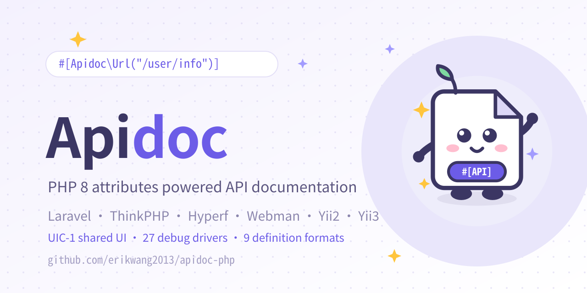

Declare docs next to your handlers and get a browsable, debuggable, exportable API portal. PHP, Go and Rust share one document model and one static UI.
Apidoc turns API docs from hand-written Markdown into declarations next to your code. PHP uses PHP 8 attributes, Go uses typed structs, and Rust uses proc macros. All three share one document model, live debugging and the same static front-end, and all support protocol annotations. All three execute server-side debug and parse definitions or IDL; Go and Rust can also serve the same Vue UI build directly.
The PHP edition started from HGthecode/apidoc-php (hg/apidoc). Go, Rust and apidoc-ui are maintained by erikwang2013. Each language keeps its native setup while the documentation experience stays consistent.
From declaration to delivery, all three languages follow the same documentation pipeline.
PHP >= 8.0Go >= 1.24Rust >= 1.82MIT

Project family social preview. The pet and annotation code.
Pick your language first.
One documentation workflow, different declaration mechanisms, framework adapters and build times. Every language has its own guide.
PHPv1.2.1
PHP
Attribute-driven API docs for PHP 8
Write PHP 8 attributes in Laravel, ThinkPHP, Hyperf, Webman, Yii2 or Yii3 and get a browsable, debuggable, exportable API portal, with 27 protocol drivers, 9 definition formats and the shared UIC-1 UI.
Declare docs as typed structs next to route registration and serve them over UIC-1 with a built-in Vue UI and server-side debug executors. Supports @protocol annotations, 9 definition formats, response caching, Mock, auth and param inference across 8 Go frameworks.
Proc macros materialize docs at compile time, linkme registers them statically and collection is zero-cost at runtime. Supports 45 protocol annotations, browser and controlled server execution, 9 definition formats, and the shared Vue UI via `ui: UiMode::Vue` + `ui_path`, for axum and actix-web.
A Vue 3 + TypeScript front-end that discovers PHP, Go and Rust backends through UIC-1 capability negotiation, with apps/versions, live debugging, protocol panels, sharing, cache, generators and multi-format exports. The build output is fully static.
One static front-end for all three backends · Vue 3.5 · Vite 6 · Pinia · Monaco
#[apidoc::title("Get user")]#[apidoc::method("GET")]#[apidoc::url("/users/{id}")]#[apidoc::route_param( name = "id", ty = "int", required)]#[apidoc::returned( name = "name", ty = "string")]asyncfnget_user(){}
One documentation experience, native in each.
Live debug, auth, exports and the shared UI follow one workflow; see each guide for exact capabilities.
Arbitrary protocol debug
All three editions support protocol annotations. HTTP, WebSocket and SSE connect from the browser; PHP, Go and Rust all provide controlled server executors. Go gates them by build tag and advertises only compiled protocols; Rust derives capabilities from compiled features. The relay is off by default.
200 OKsample response
{ "code": 0, "data": { "id": 1024 } }
Mock data
Field-level Mock examples. PHP supports rule expressions, Go generates values by type, and Rust ships 15 fake rules.
nickname"erik"
email"fake:email"
id1024
Apps and versions
Manage multiple apps and versions in one portal, switch by the app tree, and scope access passwords per app.
api v1admin v2open v3
Auth and caching
Global and per-app passwords, document caching, ETag/304 and constant-time comparison, with local read-path P95 under 10 ms.
password******
Unified exports
JSON, TypeScript, Markdown and Swagger/OpenAPI are available per language. Hand request and response shapes to front-end and QA.
JSONTypeScriptMarkdownSwagger
Code generation
PHP and Rust provide template-driven code generation; Go focuses on exports and comment parsing.
API fileHandlerSQL
Shared docs UI
apidoc-ui discovers PHP, Go and Rust through UIC-1 and gates protocol panels, sharing, cache and generator entries from the capability matrix.
apidoc-ui · Vue 3
Security boundary
HMAC tokens, CORS allowlists and path/identifier validation. Protocol relays also restrict targets, auth, rate, timeout and bytes.
HMAC-SHA256CORS
From declaration to delivery
Declare, browse, debug, export and deploy on one path. All three languages parse 9 local definition formats: proto, WSDL/XSD, GraphQL, OpenAPI, AsyncAPI, JSON Schema, JSON-RPC, XML-RPC and OData EDMX.
Declare→Browse→Debug→Export→Deploy
Declare
annotations next to code
Browse
docs generated automatically
Debug
live requests and Mock
Export
JSON / TS / Swagger
The usage guides are the core of this site.
Each guide covers installation, rules, complete examples, common scenarios and troubleshooting. Pick your stack, then go deep.
PHPv1.2.1
PHP Guide
Write PHP 8 attributes in Laravel, ThinkPHP, Hyperf, Webman, Yii2 or Yii3 and get a browsable, debuggable, exportable API portal, with 27 protocol drivers, 9 definition formats and the shared UIC-1 UI.
Declare docs as typed structs next to route registration and serve them over UIC-1 with a built-in Vue UI and server-side debug executors. Supports @protocol annotations, 9 definition formats, response caching, Mock, auth and param inference across 8 Go frameworks.
Proc macros materialize docs at compile time, linkme registers them statically and collection is zero-cost at runtime. Supports 45 protocol annotations, browser and controlled server execution, 9 definition formats, and the shared Vue UI via `ui: UiMode::Vue` + `ui_path`, for axum and actix-web.
A Vue 3 + TypeScript front-end that discovers PHP, Go and Rust backends through UIC-1 capability negotiation, with apps/versions, live debugging, protocol panels, sharing, cache, generators and multi-format exports. The build output is fully static.
Every guide starts from a minimal runnable example, then covers annotation rules, scenarios and troubleshooting.
Current versions
Full changelogs and release assets live on each repository's Releases page; all four editions implement UIC-1, at UI 3.4.0 / PHP 1.2.1 / Go 1.1.1 / Rust 2.2.0.
PHPv1.2.1
Full UIC-1 and 27 debug drivers
Full UIC-1 /ui/v1 surface: read, debug, sharing, cache, generator and exports; the declarative generator has no side effects
Adds thrift, dubbo, http2/3, kafka, amqp, xmpp, dnp3, iec104, bacnet, opcua, rtp/rtcp/rtmp and lwm2m, for 27 drivers
9 definition formats, SSRF/TLS/parser limits and DNP3/BACnet/IEC 104 fixes